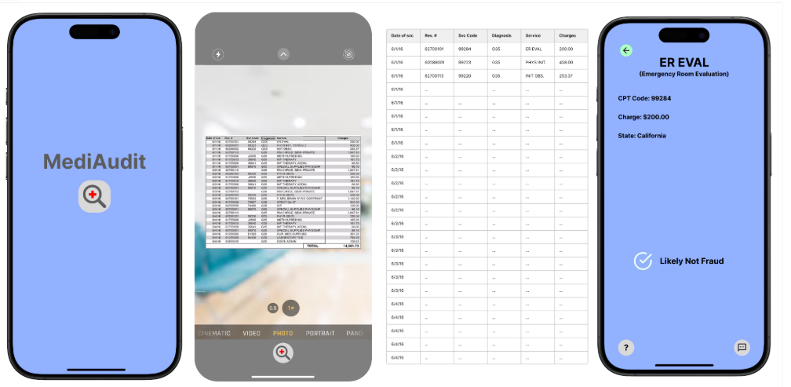

Predicting League of Legends Match Outcomes
Used data from professional League of Legends matches to predict match outcomes
based on early-game statistics (like first tower, first dragon, and assists).
Built logistic regression and gradient boosting models with fairness audits.
The final model achieved over 95% accuracy and revealed subtle blue-side bias.
View Project
View Code
Sports Betting Behavior Analysis
Analyzed real-time betting data using Python (Pandas, Seaborn) and LiveSports API
to explore how odds fluctuations affected betting patterns in EPL and NFL games.
Conducted regression analysis, A/B testing, and hypothesis testing to identify trends.
View Report
Medical Bill Decoder App

Created an iOS app using Swift, Python (NLP), and Xcode
to translate complex medical bills into plain English.
Implemented cost estimation and breakdown visualization to improve transparency
for patients navigating healthcare billing.